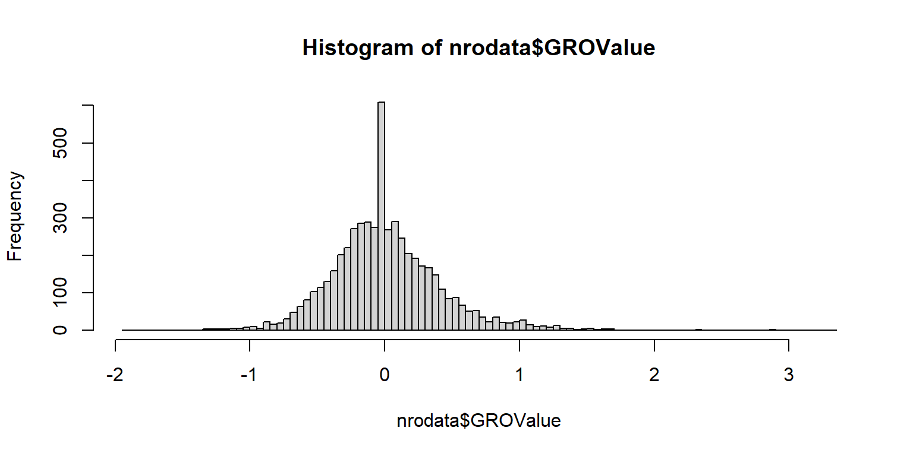
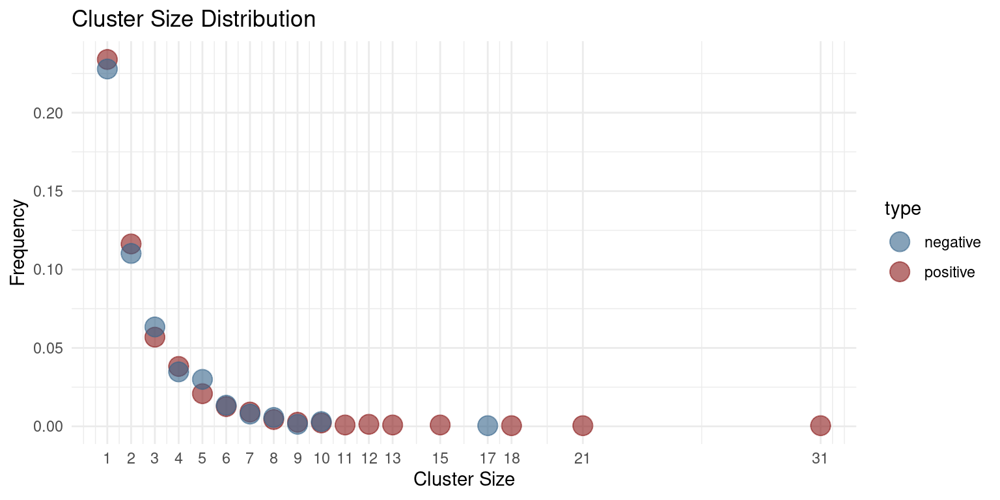
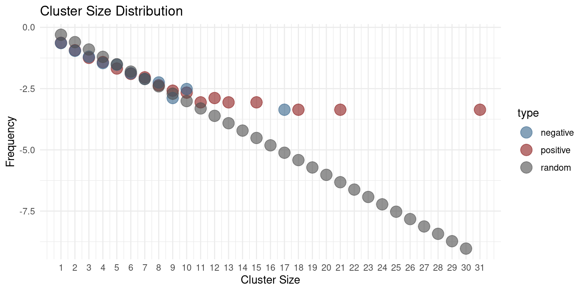
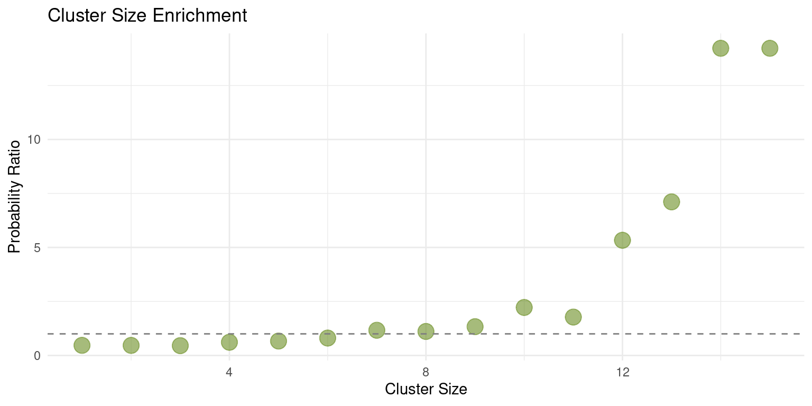

1 + 1[1] 2This is a first practical aiming at showcasing observed over expected frequencies
Description of the problem
1 + 1[1] 2You can add options to executable code like this
nrodata<-read.delim("https://raw.githubusercontent.com/christoforos-nikolaou/MolBioMedClass/master/Datasets/SacCer2_All_NRO_values.tsv", header=T, sep="\t")
hist(nrodata$GROValue, breaks=100)
upratio<-length(which(nrodata$GROValue>=0))/length(nrodata$GROValue)
upratio[1] 0.5077577library(rle)
chroms<-as.factor(nrodata$chrom)
runs<-rle(c("0"))
for(chromosome in levels(chroms)){
i<-which(nrodata$chrom==chromosome)
values<-nrodata$GROValue[i]
values<-ifelse(values >= 0, 1, 0)
runs<-c(runs,rle(values))
}posclusters<-runs$lengths[which(runs$values==1)]
negclusters<-runs$lengths[which(runs$values==0)]
tabp<-as.data.frame(table(posclusters))
tabn<-as.data.frame(table(negclusters))
tabp$Freq<-tabp$Freq/length(runs$lengths)
colnames(tabp)[1]<-"Cluster Size"
tabn$Freq<-tabn$Freq/length(runs$lengths)
colnames(tabn)[1]<-"Cluster Size"
tabp$type<-"positive"
tabn$type<-"negative"
tab<-rbind(tabp, tabn)
tab$`Cluster Size`<-as.numeric(as.character(tab$`Cluster Size`))
#
library(ggplot2)
ggplot(tab, aes(x = as.numeric(`Cluster Size`), y = Freq, color= type)) +
geom_point(size = 5, alpha = 0.6) +
scale_color_manual(values = c("positive" = "firebrick4", "negative" = "steelblue4")) +
scale_x_continuous(breaks = sort(unique(tab$`Cluster Size`))) +
labs(title = "Cluster Size Distribution", x = "Cluster Size", y = "Frequency") +
theme_minimal()
p<-vector(mode="numeric", length=30)
for(k in 1:30){
p[k]=0.5**k
}
tabr<-data.frame("Cluster Size"=1:30, "Freq"=p, "type"="random")
colnames(tabr)[1]<-"Cluster Size"
#
tab<-rbind(tab, tabr)
#
ggplot(tab, aes(x = as.numeric(`Cluster Size`), y = log10(Freq), color= type)) +
geom_point(size = 5, alpha = 0.6) +
scale_color_manual(values = c("positive" = "firebrick4", "negative" = "steelblue4", "random"="grey30")) +
scale_x_continuous(breaks = sort(unique(tab$`Cluster Size`))) +
labs(title = "Cluster Size Distribution", x = "Cluster Size", y = "Frequency") +
theme_minimal()
clusterTable<-matrix(0, nrow=15, ncol=2)
for(i in 1:15){
clusterTable[i,1]<-i
clusterTable[i,2]<-tabp$Freq[i]/tabr$Freq[i]
}
clusterTable<-as.data.frame(clusterTable)
colnames(clusterTable)<-c("Cluster Size", "Probability Ratio")
ggplot(clusterTable, aes(x = as.numeric(`Cluster Size`), y = `Probability Ratio`)) +
geom_point(size = 5, alpha = 0.6, color="olivedrab") +
labs(title = "Cluster Size Enrichment", x = "Cluster Size", y = "Probability Ratio") +
geom_hline(yintercept=1, color="grey50", linetype="dashed", linewidth=0.5) +
theme_minimal()
j<-which(runs$lengths>=7)
runs[j]Run Length Encoding
lengths: int [1:42] 1 2 1 3 3 2 1 4 1 2 ...
values : chr [1:42] "0" "1" "0" "1" "0" "1" "0" "1" "0" "1" "0" "1" "0" "1" "0" "1" ...